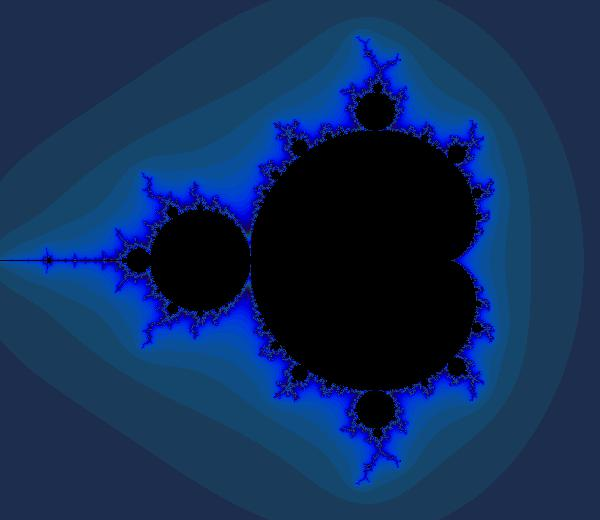

try:
%tensorflow_version 2.x
COLAB = True
print("Note: using Google CoLab")
except:
print("Note: not using Google CoLab")
COLAB = FalseNote: using Google CoLab
TensorFlow - Google’s deep learning API. The focus of this class, along with Keras.
Keras - Also by Google, higher level framework that allows the use of TensorFlow, MXNet and Theano interchangeably.
PyTorch - PyTorch is an open source machine learning library based on the Torch library, used for applications such as computer vision and natural language processing. It is primarily developed by Facebook’s AI Research lab.
MXNet Apache foundation’s deep learning API. Can be used through Keras.
Torch is used by Google DeepMind, the Facebook AI Research Group, IBM, Yandex and the Idiap Research Institute. It has been used for some of the most advanced deep learning projects in the world. However, it requires the LUA** programming language. It is very advanced, but it is not mainstream. I have not worked with Torch (yet!).
PaddlePaddle - Baidu’s deep learning API.
Deeplearning4J - Java based. Supports all major platforms. GPU support in Java!
Computational Network Toolkit (CNTK) - Microsoft. Support for Windows/Linux, command line only. Bindings for predictions for C#/Python. GPU support.
H2O - Java based. Supports all major platforms. Limited support for computer vision. No GPU support.
Communicate with TensorFlow using Keras [Cite:franccois2017deep].
try:
%tensorflow_version 2.x
COLAB = True
print("Note: using Google CoLab")
except:
print("Note: not using Google CoLab")
COLAB = FalseNote: using Google CoLabimport tensorflow as tf
# Create a Constant op that produces a 1x2 matrix. The op is
# added as a node to the default graph.
#
# The value returned by the constructor represents the output
# of the Constant op.
matrix1 = tf.constant([[3., 3.]])
# Create another Constant that produces a 2x1 matrix.
matrix2 = tf.constant([[2.],[2.]])
# Create a Matmul op that takes 'matrix1' and 'matrix2' as inputs.
# The returned value, 'product', represents the result of the matrix
# multiplication.
product = tf.matmul(matrix1, matrix2)
print(product)
print(float(product))tf.Tensor([[12.]], shape=(1, 1), dtype=float32)
12.0import tensorflow as tf
x = tf.Variable([1.0, 2.0])
a = tf.constant([3.0, 3.0])
# Add an op to subtract 'a' from 'x'. Run it and print the result
sub = tf.subtract(x, a)
print(sub)
print(sub.numpy())
# ==> [-2. -1.]tf.Tensor([-2. -1.], shape=(2,), dtype=float32)
[-2. -1.]x.assign([4.0, 6.0])<tf.Variable 'UnreadVariable' shape=(2,) dtype=float32, numpy=array([4., 6.], dtype=float32)>sub = tf.subtract(x, a)
print(sub)
print(sub.numpy())tf.Tensor([1. 3.], shape=(2,), dtype=float32)
[1. 3.]# Import libraries for simulation
import tensorflow as tf
import numpy as np
# Imports for visualization
import PIL.Image
from io import BytesIO
from IPython.display import Image, display
def DisplayFractal(a, fmt='jpeg'):
"""Display an array of iteration counts as a
colorful picture of a fractal."""
a_cyclic = (6.28*a/20.0).reshape(list(a.shape)+[1])
img = np.concatenate([10+20*np.cos(a_cyclic),
30+50*np.sin(a_cyclic),
155-80*np.cos(a_cyclic)], 2)
img[a==a.max()] = 0
a = img
a = np.uint8(np.clip(a, 0, 255))
f = BytesIO()
PIL.Image.fromarray(a).save(f, fmt)
display(Image(data=f.getvalue()))
# Use NumPy to create a 2D array of complex numbers
Y, X = np.mgrid[-1.3:1.3:0.005, -2:1:0.005]
Z = X+1j*Y
xs = tf.constant(Z.astype(np.complex64))
zs = tf.Variable(xs)
ns = tf.Variable(tf.zeros_like(xs, tf.float32))
# Operation to update the zs and the iteration count.
#
# Note: We keep computing zs after they diverge! This
# is very wasteful! There are better, if a little
# less simple, ways to do this.
#
for i in range(200):
# Compute the new values of z: z^2 + x
zs_ = zs*zs + xs
# Have we diverged with this new value?
not_diverged = tf.abs(zs_) < 4
zs.assign(zs_),
ns.assign_add(tf.cast(not_diverged, tf.float32))
DisplayFractal(ns.numpy())
from tensorflow.keras.models import Sequential
from tensorflow.keras.layers import Dense, Activation
import pandas as pd
import io
import os
import requests
import numpy as np
from sklearn import metrics
df = pd.read_csv(
"https://data.heatonresearch.com/data/t81-558/auto-mpg.csv",
na_values=['NA', '?'])
cars = df['name']
# Handle missing value
df['horsepower'] = df['horsepower'].fillna(df['horsepower'].median())
# Pandas to Numpy
x = df[['cylinders', 'displacement', 'horsepower', 'weight',
'acceleration', 'year', 'origin']].values
y = df['mpg'].values # regression
# Build the neural network
model = Sequential()
model.add(Dense(25, input_dim=x.shape[1], activation='relu')) # Hidden 1
model.add(Dense(10, activation='relu')) # Hidden 2
model.add(Dense(1)) # Output
model.compile(loss='mean_squared_error', optimizer='adam')
model.fit(x,y,verbose=2,epochs=100)Epoch 1/100
13/13 - 0s - loss: 4580.9326
Epoch 2/100
13/13 - 0s - loss: 1225.3738
Epoch 3/100
13/13 - 0s - loss: 553.5983
Epoch 4/100
13/13 - 0s - loss: 376.0931
Epoch 5/100
13/13 - 0s - loss: 371.2755
Epoch 6/100
13/13 - 0s - loss: 355.6521
Epoch 7/100
13/13 - 0s - loss: 340.7242
Epoch 8/100
13/13 - 0s - loss: 332.5170
Epoch 9/100
13/13 - 0s - loss: 321.3474
Epoch 10/100
13/13 - 0s - loss: 309.0533
Epoch 11/100
13/13 - 0s - loss: 298.6037
Epoch 12/100
13/13 - 0s - loss: 290.2845
Epoch 13/100
13/13 - 0s - loss: 281.7734
Epoch 14/100
13/13 - 0s - loss: 267.6147
Epoch 15/100
13/13 - 0s - loss: 255.6712
Epoch 16/100
13/13 - 0s - loss: 245.0956
Epoch 17/100
13/13 - 0s - loss: 238.7114
Epoch 18/100
13/13 - 0s - loss: 228.2198
Epoch 19/100
13/13 - 0s - loss: 215.6643
Epoch 20/100
13/13 - 0s - loss: 206.8975
Epoch 21/100
13/13 - 0s - loss: 198.3939
Epoch 22/100
13/13 - 0s - loss: 189.5826
Epoch 23/100
13/13 - 0s - loss: 184.5812
Epoch 24/100
13/13 - 0s - loss: 173.4126
Epoch 25/100
13/13 - 0s - loss: 169.0896
Epoch 26/100
13/13 - 0s - loss: 158.8616
Epoch 27/100
13/13 - 0s - loss: 147.4314
Epoch 28/100
13/13 - 0s - loss: 140.2026
Epoch 29/100
13/13 - 0s - loss: 133.2955
Epoch 30/100
13/13 - 0s - loss: 128.1834
Epoch 31/100
13/13 - 0s - loss: 120.1640
Epoch 32/100
13/13 - 0s - loss: 114.6829
Epoch 33/100
13/13 - 0s - loss: 109.8683
Epoch 34/100
13/13 - 0s - loss: 105.6856
Epoch 35/100
13/13 - 0s - loss: 100.0182
Epoch 36/100
13/13 - 0s - loss: 93.3371
Epoch 37/100
13/13 - 0s - loss: 91.3530
Epoch 38/100
13/13 - 0s - loss: 85.7752
Epoch 39/100
13/13 - 0s - loss: 82.4184
Epoch 40/100
13/13 - 0s - loss: 76.0113
Epoch 41/100
13/13 - 0s - loss: 73.7212
Epoch 42/100
13/13 - 0s - loss: 70.6216
Epoch 43/100
13/13 - 0s - loss: 67.4598
Epoch 44/100
13/13 - 0s - loss: 64.0807
Epoch 45/100
13/13 - 0s - loss: 62.0253
Epoch 46/100
13/13 - 0s - loss: 59.2131
Epoch 47/100
13/13 - 0s - loss: 56.5928
Epoch 48/100
13/13 - 0s - loss: 56.3038
Epoch 49/100
13/13 - 0s - loss: 52.7268
Epoch 50/100
13/13 - 0s - loss: 50.3988
Epoch 51/100
13/13 - 0s - loss: 49.0474
Epoch 52/100
13/13 - 0s - loss: 47.9957
Epoch 53/100
13/13 - 0s - loss: 47.7353
Epoch 54/100
13/13 - 0s - loss: 44.7161
Epoch 55/100
13/13 - 0s - loss: 44.8755
Epoch 56/100
13/13 - 0s - loss: 43.3957
Epoch 57/100
13/13 - 0s - loss: 42.0779
Epoch 58/100
13/13 - 0s - loss: 41.9396
Epoch 59/100
13/13 - 0s - loss: 40.3681
Epoch 60/100
13/13 - 0s - loss: 41.1852
Epoch 61/100
13/13 - 0s - loss: 39.7117
Epoch 62/100
13/13 - 0s - loss: 41.0216
Epoch 63/100
13/13 - 0s - loss: 36.1499
Epoch 64/100
13/13 - 0s - loss: 35.3468
Epoch 65/100
13/13 - 0s - loss: 35.1042
Epoch 66/100
13/13 - 0s - loss: 34.2546
Epoch 67/100
13/13 - 0s - loss: 33.6177
Epoch 68/100
13/13 - 0s - loss: 32.9660
Epoch 69/100
13/13 - 0s - loss: 32.6077
Epoch 70/100
13/13 - 0s - loss: 32.2787
Epoch 71/100
13/13 - 0s - loss: 31.4921
Epoch 72/100
13/13 - 0s - loss: 30.9388
Epoch 73/100
13/13 - 0s - loss: 30.7971
Epoch 74/100
13/13 - 0s - loss: 30.1166
Epoch 75/100
13/13 - 0s - loss: 30.3033
Epoch 76/100
13/13 - 0s - loss: 29.7823
Epoch 77/100
13/13 - 0s - loss: 29.0691
Epoch 78/100
13/13 - 0s - loss: 29.2846
Epoch 79/100
13/13 - 0s - loss: 28.1004
Epoch 80/100
13/13 - 0s - loss: 28.0843
Epoch 81/100
13/13 - 0s - loss: 27.5363
Epoch 82/100
13/13 - 0s - loss: 27.3842
Epoch 83/100
13/13 - 0s - loss: 26.8047
Epoch 84/100
13/13 - 0s - loss: 26.2902
Epoch 85/100
13/13 - 0s - loss: 26.4791
Epoch 86/100
13/13 - 0s - loss: 25.9914
Epoch 87/100
13/13 - 0s - loss: 26.4426
Epoch 88/100
13/13 - 0s - loss: 25.3650
Epoch 89/100
13/13 - 0s - loss: 24.7668
Epoch 90/100
13/13 - 0s - loss: 25.0466
Epoch 91/100
13/13 - 0s - loss: 23.9254
Epoch 92/100
13/13 - 0s - loss: 24.7530
Epoch 93/100
13/13 - 0s - loss: 24.3067
Epoch 94/100
13/13 - 0s - loss: 25.2663
Epoch 95/100
13/13 - 0s - loss: 24.8965
Epoch 96/100
13/13 - 0s - loss: 24.3817
Epoch 97/100
13/13 - 0s - loss: 22.7545
Epoch 98/100
13/13 - 0s - loss: 23.2711
Epoch 99/100
13/13 - 0s - loss: 22.9325
Epoch 100/100
13/13 - 0s - loss: 22.9305<tensorflow.python.keras.callbacks.History at 0x7efe002f9fd0>pred = model.predict(x)
print(f"Shape: {pred.shape}")
print(pred[0:10])Shape: (398, 1)
[[14.227755]
[13.352877]
[13.366304]
[14.042093]
[13.76317 ]
[12.621584]
[11.604197]
[11.754587]
[12.065157]
[11.800211]]# Measure RMSE error. RMSE is common for regression.
score = np.sqrt(metrics.mean_squared_error(pred,y))
print(f"Final score (RMSE): {score}")Final score (RMSE): 4.71485252486946# Sample predictions
for i in range(10):
print(f"{i+1}. Car name: {cars[i]}, MPG: {y[i]}, "
+ "predicted MPG: {pred[i]}")1. Car name: chevrolet chevelle malibu, MPG: 18.0, predicted MPG: {pred[i]}
2. Car name: buick skylark 320, MPG: 15.0, predicted MPG: {pred[i]}
3. Car name: plymouth satellite, MPG: 18.0, predicted MPG: {pred[i]}
4. Car name: amc rebel sst, MPG: 16.0, predicted MPG: {pred[i]}
5. Car name: ford torino, MPG: 17.0, predicted MPG: {pred[i]}
6. Car name: ford galaxie 500, MPG: 15.0, predicted MPG: {pred[i]}
7. Car name: chevrolet impala, MPG: 14.0, predicted MPG: {pred[i]}
8. Car name: plymouth fury iii, MPG: 14.0, predicted MPG: {pred[i]}
9. Car name: pontiac catalina, MPG: 14.0, predicted MPG: {pred[i]}
10. Car name: amc ambassador dpl, MPG: 15.0, predicted MPG: {pred[i]}import pandas as pd
import io
import requests
import numpy as np
from sklearn import metrics
from tensorflow.keras.models import Sequential
from tensorflow.keras.layers import Dense, Activation
from tensorflow.keras.callbacks import EarlyStopping
df = pd.read_csv(
"https://data.heatonresearch.com/data/t81-558/iris.csv",
na_values=['NA', '?'])
# Convert to numpy - Classification
x = df[['sepal_l', 'sepal_w', 'petal_l', 'petal_w']].values
dummies = pd.get_dummies(df['species']) # Classification
species = dummies.columns
y = dummies.values
# Build neural network
model = Sequential()
model.add(Dense(50, input_dim=x.shape[1], activation='relu')) # Hidden 1
model.add(Dense(25, activation='relu')) # Hidden 2
model.add(Dense(y.shape[1],activation='softmax')) # Output
model.compile(loss='categorical_crossentropy', optimizer='adam')
model.fit(x,y,verbose=2,epochs=100)Epoch 1/100
5/5 - 0s - loss: 1.2044
Epoch 2/100
5/5 - 0s - loss: 1.0163
Epoch 3/100
5/5 - 0s - loss: 0.9398
Epoch 4/100
5/5 - 0s - loss: 0.9153
Epoch 5/100
5/5 - 0s - loss: 0.8853
Epoch 6/100
5/5 - 0s - loss: 0.8544
Epoch 7/100
5/5 - 0s - loss: 0.8274
Epoch 8/100
5/5 - 0s - loss: 0.8119
Epoch 9/100
5/5 - 0s - loss: 0.7936
Epoch 10/100
5/5 - 0s - loss: 0.7705
Epoch 11/100
5/5 - 0s - loss: 0.7500
Epoch 12/100
5/5 - 0s - loss: 0.7247
Epoch 13/100
5/5 - 0s - loss: 0.7005
Epoch 14/100
5/5 - 0s - loss: 0.6765
Epoch 15/100
5/5 - 0s - loss: 0.6503
Epoch 16/100
5/5 - 0s - loss: 0.6312
Epoch 17/100
5/5 - 0s - loss: 0.6034
Epoch 18/100
5/5 - 0s - loss: 0.5799
Epoch 19/100
5/5 - 0s - loss: 0.5612
Epoch 20/100
5/5 - 0s - loss: 0.5416
Epoch 21/100
5/5 - 0s - loss: 0.5222
Epoch 22/100
5/5 - 0s - loss: 0.5048
Epoch 23/100
5/5 - 0s - loss: 0.4886
Epoch 24/100
5/5 - 0s - loss: 0.4717
Epoch 25/100
5/5 - 0s - loss: 0.4600
Epoch 26/100
5/5 - 0s - loss: 0.4461
Epoch 27/100
5/5 - 0s - loss: 0.4323
Epoch 28/100
5/5 - 0s - loss: 0.4218
Epoch 29/100
5/5 - 0s - loss: 0.4096
Epoch 30/100
5/5 - 0s - loss: 0.3990
Epoch 31/100
5/5 - 0s - loss: 0.3883
Epoch 32/100
5/5 - 0s - loss: 0.3787
Epoch 33/100
5/5 - 0s - loss: 0.3684
Epoch 34/100
5/5 - 0s - loss: 0.3594
Epoch 35/100
5/5 - 0s - loss: 0.3510
Epoch 36/100
5/5 - 0s - loss: 0.3413
Epoch 37/100
5/5 - 0s - loss: 0.3341
Epoch 38/100
5/5 - 0s - loss: 0.3243
Epoch 39/100
5/5 - 0s - loss: 0.3164
Epoch 40/100
5/5 - 0s - loss: 0.3128
Epoch 41/100
5/5 - 0s - loss: 0.3011
Epoch 42/100
5/5 - 0s - loss: 0.2978
Epoch 43/100
5/5 - 0s - loss: 0.2863
Epoch 44/100
5/5 - 0s - loss: 0.2832
Epoch 45/100
5/5 - 0s - loss: 0.2735
Epoch 46/100
5/5 - 0s - loss: 0.2705
Epoch 47/100
5/5 - 0s - loss: 0.2627
Epoch 48/100
5/5 - 0s - loss: 0.2563
Epoch 49/100
5/5 - 0s - loss: 0.2499
Epoch 50/100
5/5 - 0s - loss: 0.2448
Epoch 51/100
5/5 - 0s - loss: 0.2381
Epoch 52/100
5/5 - 0s - loss: 0.2348
Epoch 53/100
5/5 - 0s - loss: 0.2301
Epoch 54/100
5/5 - 0s - loss: 0.2236
Epoch 55/100
5/5 - 0s - loss: 0.2187
Epoch 56/100
5/5 - 0s - loss: 0.2144
Epoch 57/100
5/5 - 0s - loss: 0.2082
Epoch 58/100
5/5 - 0s - loss: 0.2033
Epoch 59/100
5/5 - 0s - loss: 0.1978
Epoch 60/100
5/5 - 0s - loss: 0.1949
Epoch 61/100
5/5 - 0s - loss: 0.1858
Epoch 62/100
5/5 - 0s - loss: 0.1832
Epoch 63/100
5/5 - 0s - loss: 0.1779
Epoch 64/100
5/5 - 0s - loss: 0.1736
Epoch 65/100
5/5 - 0s - loss: 0.1689
Epoch 66/100
5/5 - 0s - loss: 0.1657
Epoch 67/100
5/5 - 0s - loss: 0.1655
Epoch 68/100
5/5 - 0s - loss: 0.1607
Epoch 69/100
5/5 - 0s - loss: 0.1587
Epoch 70/100
5/5 - 0s - loss: 0.1523
Epoch 71/100
5/5 - 0s - loss: 0.1498
Epoch 72/100
5/5 - 0s - loss: 0.1473
Epoch 73/100
5/5 - 0s - loss: 0.1452
Epoch 74/100
5/5 - 0s - loss: 0.1455
Epoch 75/100
5/5 - 0s - loss: 0.1390
Epoch 76/100
5/5 - 0s - loss: 0.1415
Epoch 77/100
5/5 - 0s - loss: 0.1332
Epoch 78/100
5/5 - 0s - loss: 0.1379
Epoch 79/100
5/5 - 0s - loss: 0.1297
Epoch 80/100
5/5 - 0s - loss: 0.1287
Epoch 81/100
5/5 - 0s - loss: 0.1269
Epoch 82/100
5/5 - 0s - loss: 0.1243
Epoch 83/100
5/5 - 0s - loss: 0.1234
Epoch 84/100
5/5 - 0s - loss: 0.1204
Epoch 85/100
5/5 - 0s - loss: 0.1196
Epoch 86/100
5/5 - 0s - loss: 0.1177
Epoch 87/100
5/5 - 0s - loss: 0.1153
Epoch 88/100
5/5 - 0s - loss: 0.1154
Epoch 89/100
5/5 - 0s - loss: 0.1138
Epoch 90/100
5/5 - 0s - loss: 0.1118
Epoch 91/100
5/5 - 0s - loss: 0.1101
Epoch 92/100
5/5 - 0s - loss: 0.1094
Epoch 93/100
5/5 - 0s - loss: 0.1087
Epoch 94/100
5/5 - 0s - loss: 0.1057
Epoch 95/100
5/5 - 0s - loss: 0.1066
Epoch 96/100
5/5 - 0s - loss: 0.1035
Epoch 97/100
5/5 - 0s - loss: 0.1027
Epoch 98/100
5/5 - 0s - loss: 0.1037
Epoch 99/100
5/5 - 0s - loss: 0.1016
Epoch 100/100
5/5 - 0s - loss: 0.1036<tensorflow.python.keras.callbacks.History at 0x7efe41398b00># Print out number of species found:
print(species)Index(['Iris-setosa', 'Iris-versicolor', 'Iris-virginica'], dtype='object')pred = model.predict(x)
print(f"Shape: {pred.shape}")
print(pred[0:10])Shape: (150, 3)
[[9.97697055e-01 2.15794984e-03 1.44956546e-04]
[9.94137406e-01 5.50468592e-03 3.57910059e-04]
[9.96191502e-01 3.52777750e-03 2.80687527e-04]
[9.93117690e-01 6.42941520e-03 4.52894397e-04]
[9.97973382e-01 1.89066969e-03 1.36019531e-04]
[9.97510195e-01 2.37838831e-03 1.11383706e-04]
[9.95967269e-01 3.74595844e-03 2.86734197e-04]
[9.96544778e-01 3.24807805e-03 2.07129444e-04]
[9.91251111e-01 8.11220054e-03 6.36695651e-04]
[9.94891763e-01 4.79313312e-03 3.15106096e-04]]np.set_printoptions(suppress=True)print(y[0:10])[[1 0 0]
[1 0 0]
[1 0 0]
[1 0 0]
[1 0 0]
[1 0 0]
[1 0 0]
[1 0 0]
[1 0 0]
[1 0 0]]predict_classes = np.argmax(pred,axis=1)
expected_classes = np.argmax(y,axis=1)
print(f"Predictions: {predict_classes}")
print(f"Expected: {expected_classes}")Predictions: [0 0 0 0 0 0 0 0 0 0 0 0 0 0 0 0 0 0 0 0 0 0 0 0 0 0 0 0 0 0 0 0 0 0 0 0 0
0 0 0 0 0 0 0 0 0 0 0 0 0 1 1 1 1 1 1 1 1 1 1 1 1 1 1 1 1 1 1 2 1 1 1 2 1
1 1 1 1 1 1 1 1 1 2 1 1 1 1 1 1 1 1 1 1 1 1 1 1 1 1 2 2 2 2 2 2 2 2 2 2 2
2 2 2 2 2 2 2 2 2 2 2 2 2 2 2 2 2 2 2 2 2 2 2 2 2 2 2 2 2 2 2 2 2 2 2 2 2
2 2]
Expected: [0 0 0 0 0 0 0 0 0 0 0 0 0 0 0 0 0 0 0 0 0 0 0 0 0 0 0 0 0 0 0 0 0 0 0 0 0
0 0 0 0 0 0 0 0 0 0 0 0 0 1 1 1 1 1 1 1 1 1 1 1 1 1 1 1 1 1 1 1 1 1 1 1 1
1 1 1 1 1 1 1 1 1 1 1 1 1 1 1 1 1 1 1 1 1 1 1 1 1 1 2 2 2 2 2 2 2 2 2 2 2
2 2 2 2 2 2 2 2 2 2 2 2 2 2 2 2 2 2 2 2 2 2 2 2 2 2 2 2 2 2 2 2 2 2 2 2 2
2 2]print(species[predict_classes[1:10]])Index(['Iris-setosa', 'Iris-setosa', 'Iris-setosa', 'Iris-setosa',
'Iris-setosa', 'Iris-setosa', 'Iris-setosa', 'Iris-setosa',
'Iris-setosa'],
dtype='object')from sklearn.metrics import accuracy_score
correct = accuracy_score(expected_classes,predict_classes)
print(f"Accuracy: {correct}")Accuracy: 0.98sample_flower = np.array( [[5.0,3.0,4.0,2.0]], dtype=float)
pred = model.predict(sample_flower)
print(pred)
pred = np.argmax(pred)
print(f"Predict that {sample_flower} is: {species[pred]}")[[0.00188068 0.5159181 0.48220128]]
Predict that [[5. 3. 4. 2.]] is: Iris-versicolorsample_flower = np.array( [[5.0,3.0,4.0,2.0],[5.2,3.5,1.5,0.8]],\
dtype=float)
pred = model.predict(sample_flower)
print(pred)
pred = np.argmax(pred,axis=1)
print(f"Predict that these two flowers {sample_flower} ")
print(f"are: {species[pred]}")[[0.00188067 0.51591814 0.4822012 ]
[0.9928797 0.00682994 0.0002904 ]]
Predict that these two flowers [[5. 3. 4. 2. ]
[5.2 3.5 1.5 0.8]]
are: Index(['Iris-versicolor', 'Iris-setosa'], dtype='object')